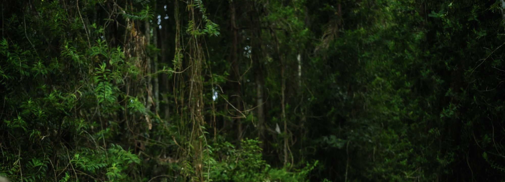

Sound and human connection, inside organisations.
For teams that are tired, organisers who need a partner, and leaders who want the quiet back — delivered by someone who understands a budget as well as a breath.
- Stress.
- Disconnection.
- Burnout.
- Fragmented teams.
Slow the room down first. Then talk.
Fifteen years building and running small ventures came before this work, so I design sessions the way I’d want a supplier to: clear brief, clear outcome, on time.
Every session starts with sound to settle the nervous system, then moves into structured conversation or reflection while people are actually present. Retreats run on time. Invoices arrive. Quarterly reporting if you need it.
Corporate wellbeing
Recurring sessions for teams, on site or at a venue.
Retreats
Programme, pricing, venue and logistics for organisers who have the vision but not the spreadsheet.
Leadership
Time out of the room for people who hold everyone else’s decisions.
Team gatherings
Away days and offsites with movement, sound and conversation built in.

A typical session: ten minutes of framing, forty of sound, twenty of structured conversation. People go back to their desks quieter, and usually talking to each other.
From an hour to a weekend
Every format is quoted to the brief. Tell me the group, the place and what you hope changes.
- 60–90 minShort session
A single sound session, in the office or nearby.
- Half dayHalf day
Sound, movement and one facilitated conversation.
- Full dayFull day
An away day designed with you, opening to close.
- 2–3 daysRetreat
Designed and run end to end, or sound woven into yours.
HR and people teams. Leadership groups. Retreat organisers. Event producers.
Tell me about your team.
A date, a group size, and what you’d like to be different afterwards. I reply personally, usually within two days.